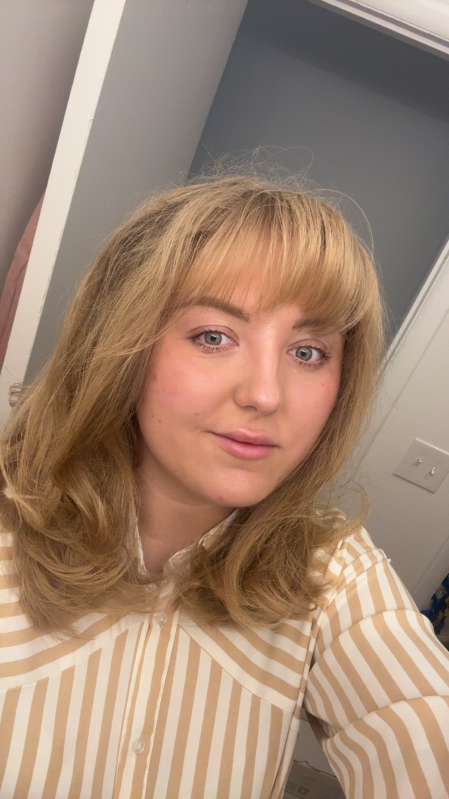
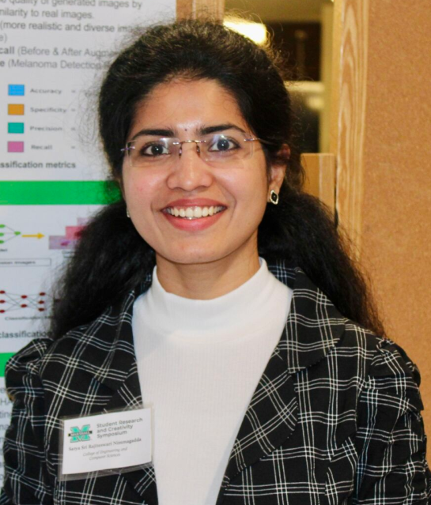

Lab Director

Dr. Ananya Jana
Lab Director
Leads the CVAIR Lab with research interests in deep learning, biomedical image analysis, and explainable AI. Focused on developing clinical decision support systems using generative and multimodal AI.
Graduate Students

Anastasiia Sukhanova
Graduate Researcher (Master's Thesis)
Research: Working on explainable colorectal cancer segmentation using vision-language models like CLIP and LLaVA.
Daron Weekley
Graduate Researcher (Independent Study)
Research: Focusing on tooth segmentation and the impact of dental mesh resolution on tooth segmentation.

Satya Nimmagadda
Graduate Researcher (Collaborator)
Research: Exploring generative models for synthetic data generation in biomedical imaging.
Undergraduate Students

Jace Duckworth
Undergraduate Researcher
Research: Tooth landmark localization from 3D dental mesh.

Tanner Wick
NASA WV Undergraduate Fellow
Research: Deep learning-based human mesh recovery from 2D images guided by textual prompts.